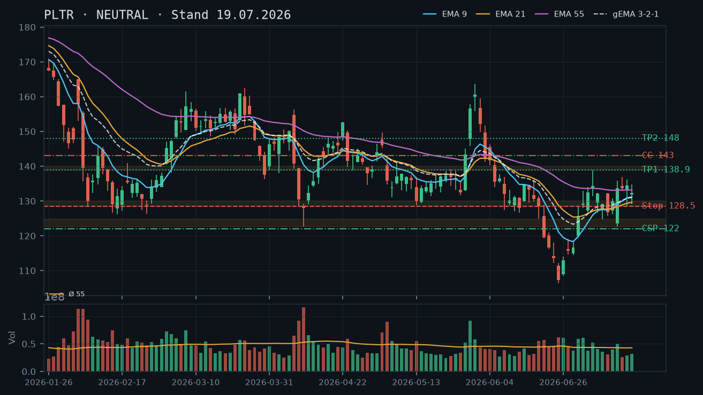
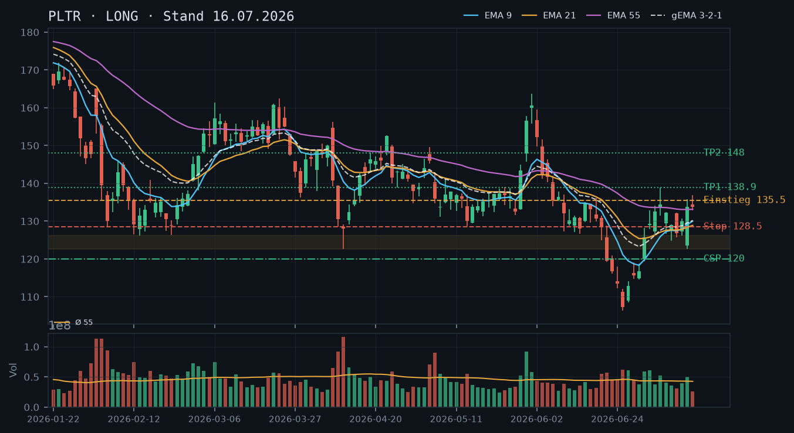
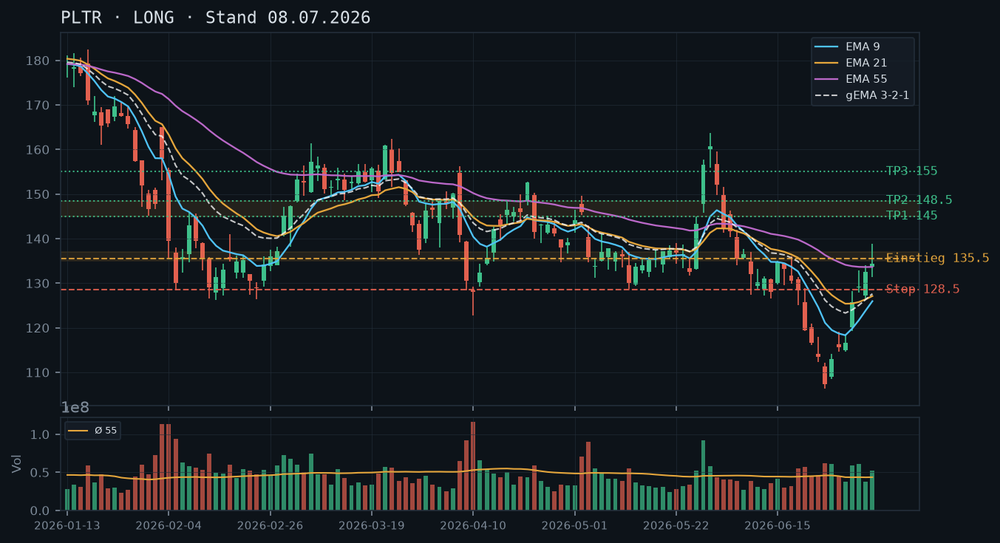

PLTR
Analyse-Historie · neueste zuerstPLTR bricht am 22.07. mit einer langen roten Kerze unter die Konsolidierungszone 128–134 ein und testet die kritische Support-Basis 122–126; der bestehende Short Call 143 (Verfall morgen, 24.07.) verfällt wertlos – neues Direktional-Setup erst nach Stabilisierung abwarten.

1 · Trendstruktur
Die Trendstruktur hat sich seit der 19.07.-Analyse deutlich eingetrübt. PLTR bildete am 22.07. ein neues Swing-Tief bei 123,45 – das ist eine klare Verletzung der seit dem 14.07. etablierten Konsolidierungszone 128–136. Das Julihoch vom 07.07. bei 138,90 bleibt der übergeordnete Widerstand. Das Tief vom 14.07. bei 122,64 und das Tief vom 09.07. bei 124,81 definieren jetzt die entscheidende Supportzone 122,64–124,81, die gestern mit dem Tagestief 123,45 von unten berührt wurde. Damit ist das Bild einer intakten Erholung von ~106 zwar strukturell nicht gebrochen, aber die Dynamik hat sich deutlich abgekühlt – niedrigeres Hoch (136,88 am 15.07. vs. 138,90 am 07.07.) und jetzt tieferes Tief unter 128 sind bärische Warnsignale.
2 · Candlestick-Formationen
Die Kerze vom 22.07. ist das dominierende Signal: Eröffnung 132,22, Hoch 132,34, Tief 123,45, Schluss 124,57 – eine lange rote Kerze (Tagesrange ca. 8,9 Punkte) mit minimalem Docht oben und kleinem Docht unten. Das ist eine klassische Bearish Engulfing-ähnliche Struktur, die die gesamte Konsolidierung der Vorwoche (128–134) in einem einzigen Tagesblock negiert. Das Volumen lag bei rel_volumen 0,90 – leicht unter Durchschnitt, was zwar keinen Panikverkauf signalisiert, aber die Abwärtsbewegung war trotzdem impulsiv und eindeutig. Die Vortageskerzen (20.–21.07.) zeigten bereits ein Versagen über 134/135 mit niedrigen Volumina (rel. 0,71 und 0,54), was die fehlende Käuferkraft oberhalb der Zone vorwegnahm.
3 · EMA-Lage (9 / 21 / 55)
Die EMA-Lage hat sich mit dem gestrigen Einbruch neu sortiert: EMA9 bei 130,58, EMA21 bei 129,83, EMA55 bei 132,88 – damit liegt der Kurs (125,29 intraday) erstmals seit der V-Erholung wieder unter allen drei EMAs. Der gema_321 bei 130,71 liegt ebenfalls deutlich über dem aktuellen Kurs. Bemerkenswert: EMA9 und EMA21 hatten sich zuletzt stark angenähert und beginnen nun unter den EMA55 zu drehen – ein beginnendes Death-Cross-Signal im kurzfristigen Verbund. Die EMA-Struktur bestätigt die bärische Kerzenbotschaft vom 22.07. und gibt keinen Long-Trigger.
4 · Trade-Setup
| Richtung | Kein Trade |
| Einstieg | Kein neues Direktional-Setup – Stabilisierung über 126 abwarten; Long-Trigger erst bei Rückeroberung des EMA9 (aktuell 130,58) auf Tagesschlussbasis |
| Stop | 122,64 (Tief 14.07.) – Unterschreitung wäre struktureller Breakdown |
| Ziel | 130,58 (EMA9) als erstes Ziel / 133–135 (ehemaliger Support, jetzt Widerstand) |
| CRV | n/a – kein Einstieg |
5 · Stillhalter (max. 12 Tage)
Der bestehende Short Call 143 (Verfall 24.07., DTE 1, Preis 0,04) ist faktisch wertlos und verfällt morgen ohne Gefährdung – die Position kann bis morgen gehalten werden, ein vorzeitiges Schließen für 0,04 lohnt sich nicht. Im Vordergrund steht jetzt die Frage, ob nach dem gestrigen Einbruch ein neuer CSP unterhalb der kritischen Supportzone 122,64 sinnvoll ist. Die Zone wurde gestern mit dem Tief 123,45 bereits punktuell touchiert – ein CSP unterhalb davon ist technisch möglich, aber nur, wenn PLTR heute intraday Stabilisierung zeigt. Kein CC-Setup: Der Kurs liegt unter allen EMAs, kein valider Widerstand in Reichweite für einen neuen Covered Call.
| Geschäft | Cash-Secured Put |
| Strike | 118.0 |
| Puffer | 5.8 % |
| Zone | unter der doppelt getesteten Supportzone 122,64–123,45 (14.07. und 22.07. Tief) |
| Verfall bis | 2026-08-01 (9 Tage) |
| Begründung | Strike 118 liegt ca. 4,6 Punkte unterhalb des gestrigen Tiefs (123,45) und ca. 4,6 Punkte unter dem Doppeltief 14.07. (122,64). Die Zone 122,64–123,45 hat damit eine erste Doppeltestung aufgebaut und dient als Puffer vor dem Strike. Der Puffer von 5,8% zum aktuellen Intraday-Kurs (125,29) ist für PLTR-Verhältnisse moderat – angesichts der gestrigen Tagesspanne von 8,9 Punkten sollte dieser Puffer nur eingegangen werden, wenn PLTR heute Stabilisierung über 124 zeigt. Andienung bei 118,00 wäre strukturell vertretbar: deutlich über dem absoluten Tief der V-Erholung (106,37) und weiterhin innerhalb der übergeordneten Erholungsstruktur. Aktienbestand (400 Stück) deckt bis zu 4 Kontrakte als Covered-Variante ab, falls gewünscht. Prüfe in der Optionskette: Prämie vs. 5,8%-Puffer, Bid-Ask am 118er Strike, Verfall 01.08., Open Interest. Fallback-Strike 115 bei weiter fallender Stabilisierungszone prüfen. |
Bestand: Bestehender Short Call 143, Verfall 24.07. (morgen), DTE 1, aktueller Preis 0,04, Abstand zum Strike -12,4% – Position ist vollständig wertlos und wird morgen ohne Gefährdung verfallen. Empfehlung: Halten bis Verfall, kein Schließen für 0,04 sinnvoll. Die Position ist durch den Aktienbestand (400 Stück) als Covered Call gedeckt. Nach Verfall morgen ist die Call-Seite wieder offen für neue Überlegungen – angesichts der aktuellen Kursstruktur (unter allen EMAs) jedoch kein neuer CC-Trade, bis sich der Kurs wieder über EMA9 stabilisiert hat.
Ausführliche Analyse vom 23.07.2026 anzeigen
PLTR – Detailanalyse 23.07.2026
1. Trendstruktur – Bruch der Konsolidierung
Die übergeordnete Erholungsstruktur seit dem Tief vom 25.06. bei 106,37 ist formal intakt – PLTR hat höhere Tiefs (106,37 → 122,64 am 14.07.) und höhere Hochs (119,08 → 138,90 am 07.07.) gebildet. Doch der gestrige Einbruch (Tief 123,45, Schluss 124,57) verletzt die seit dem 14.07. etablierte Konsolidierungszone 128–136 in einer Weise, die nicht ignoriert werden kann.
Abgleich mit Vorlage-Analysen: Die 19.07.-Analyse nannte 128,50 als Stop-Level (unter EMA9/21-Cluster und Konsolidierungstiefs). Dieser Stop wurde am 22.07. mit dem Tief bei 123,45 klar durchbrochen. Die Long-Struktur aus den Analysen vom 08.07. und 16.07. ist damit formal gestoppt – wer den Trail-Stop bei 128,50 eingehalten hat, wurde ausgestoppt. Das Hauptziel 148,00 und das Zwischenziel 138,90 aus den Voranalysen bleiben theoretisch in der Chart-Struktur vorhanden, sind aber aktuell nicht ansteuerbar.
Kritische Zonen:
- Support 122,64–123,45: Doppeltief aus 14.07. (122,64) und 22.07. (123,45) – erste echte Doppeltestung, damit bestätigter Supportbereich (wenn auch jung).
- Support 119,20–120,94: Bereich aus dem 22./23.06.-Cluster (Tiefs 119,20 und 116,18 mit Erholung auf 120,94) – zweite Verteidigungslinie.
- Widerstand 128–132: Die gesamte Konsolidierungszone Juli ist jetzt Widerstand; EMA9 (130,58), EMA21 (129,83) und gema_321 (130,71) liegen in diesem Cluster.
- Widerstand 133–136: EMA55 (132,88) und die ehem. Konsolidierungsoberkante; mehrfach getestet, jetzt Deckel.
- Widerstand 138,90: Julihoch 07.07. – unverändert relevanter Widerstand aus der Vorlage.
2. Candlestick-Formationen
Die Kerze vom 22.07. (O: 132,22 / H: 132,34 / L: 123,45 / C: 124,57) ist eine Bearish Marubozu-ähnliche Formation – langer roter Körper, kaum Dochte, klarer Verkaufsdruck den ganzen Tag. Das Tagesrange von 8,87 Punkten entspricht dem ~10,8-fachen einer normalen durchschnittlichen Daily Range der ruhigeren Konsolidierungswochen. Das Volumen von rel. 0,90 ist wenig auffällig – es war kein Ausverkauf mit Panikvolumen, sondern ein geordneter, aber bestimmter Abverkauf. Das macht eine sofortige Bodenbildung wahrscheinlicher als nach einem Volumen-Spike-Reversal, aber auch weniger zwingend.
Die Vortageskerzen 20./21.07. (rel. Volumen 0,71 und 0,54 – beide deutlich unter Durchschnitt) zeigten klassische Distribution: Der Kurs versuchte mehrfach, über 134/136 auszubrechen, scheiterte auf niedrigem Volumen. Das ist ein typisches 'Sellers in control'-Muster vor dem gestrigen Einbruch.
Heute (intraday 11:36 Uhr, Kurs 125,29, +0,58%) deutet die leichte Erholung auf erste Stabilisierung hin – noch keine Trendumkehr-Kerze, aber kein Weiter-Abverkauf.
3. EMA-Lage und gema_321
Die EMA-Konstellation vom 22.07. (EMA9: 130,58 / EMA21: 129,83 / EMA55: 132,88) zeigt eine ungewöhnliche Reihenfolge: EMA55 > EMA9 > EMA21. Das ist ein Kompressions-Artefakt durch den schnellen Anstieg und die anschließende Konsolidierung – EMA55 hat den Abwärtstrend aus März–Juni noch nicht vollständig verarbeitet und reagiert träger. Der gema_321 bei 130,71 drückt das gewichtete Zentrum der EMAs aus und liegt klar über dem Kurs (125,29 intraday).
Der Kurs befindet sich erstmals seit dem 01.07. wieder unter allen drei EMAs – das ist ein klares technisches Short-Signal im kurzfristigen Bild. EMA9 und EMA21 beginnen sich unter den EMA55 zu drehen (Death Cross im Kurzzeitverbund in Vorbereitung), was den bärischen Bias für die nächsten Tage untermauert. Erst eine Rückeroberung des EMA9 auf Tagesschlussbasis (aktuell 130,58) würde das Bild neutralisieren.
4. Trade-Setups (Direktional) – Alternative Szenarien
Szenario A – Stabilisierung und Bounce (bevorzugtes Abwarte-Setup):
Kein Einstieg heute. Warten auf Stabilisierungskerze über 124,57 (gestriger Schluss) mit höherem Schluss und idealerweise Volumen > rel. 1,20. Danach Long-Trigger erst bei Rückeroberung EMA9 (130,58) auf Tagesschlussbasis.
Einstieg: 130,80 (Stop-Buy über EMA9-Kreuzung) | Stop: 122,50 (unter Doppeltief) | Ziel 1: 133,00 (EMA55-Zone) | Ziel 2: 138,90 (Julihoch) | CRV zu Ziel 2: ca. 1,5 : 1 – akzeptabel, aber kein High-Quality-Setup.
Szenario B – Breakdown unter 122,64 (Bärisch):
Wenn PLTR das Doppeltief 122,64 auf Tagesschlussbasis unterschreitet, öffnet sich die Zone 119–120 als nächster Support. Short-Trade ist angesichts der übergeordneten Erholungsstruktur (Tief 106,37 bleibt der Boden) und des Aktienbestands nicht sinnvoll – stattdessen würde dies den CSP-Strike auf 115 adjustieren.
Einstieg Short: nicht empfohlen (Aktienbestand, übergeordneter Aufwärtstrend intakt).
Szenario C – V-Recovery heute (unwahrscheinlich, aber möglich):
Sollte PLTR intraday über 128 schließen (Rückeroberung der Konsolidierungsunterkante auf Schlussbasis), wäre ein aggressiverer Long-Einstieg mit Stop 122,50 denkbar. CRV zu 138,90: ca. 2,0 : 1. Angesichts der EMA-Lage und des fehlenden Volumens heute Morgen ist das jedoch ein Low-Probability-Setup.
5. Stillhalter-Setups (Schwerpunkt)
Bestehender Short Call 143, Verfall 24.07.
Der in der 19.07.-Analyse besprochene Roll-Trigger (Kursanstieg über 140 mit Delta > 0,30) wurde nicht ausgelöst – stattdessen ist PLTR massiv abgefallen. Der Short Call 143 notiert laut IBKR-Snapshot bei 0,04 (DTE 1, Abstand -12,4%). Empfehlung: Halten bis Verfall morgen (24.07.). Ein Schließen für 0,04 erzeugt nur Transaktionskosten ohne sinnvollen Mehrwert. Nach Verfall ist die Call-Seite frei – ein neuer CC ist jedoch erst sinnvoll, wenn der Kurs wieder über EMA9 (130,58) stabilisiert ist. Die Vorlage-Aussage aus 19.07. (Roll-Trigger bei Delta > 0,30 über 140,00) wird hiermit verworfen – das Szenario hat sich nicht materialisiert.
Neuer CSP – Strike 118, Verfall 01.08.2026
Zonen-Herleitung: Die Supportzone 122,64–123,45 wurde erstmals doppelt getestet (14.07. Tief 122,64, 22.07. Tief 123,45). Sie dient als unmittelbarer Puffer vor dem Strike 118. Der Strike 118 liegt ca. 4,6 Punkte unterhalb dieser Zone – damit greift selbst ein erneuter Test der Zone nicht sofort den Strike an. Die nächste relevante Unterstützung darunter liegt bei 119,20 (Tief 22.06.), was einen weiteren Mini-Puffer zwischen Zone und Strike schafft.
Puffer-Berechnung: Aktueller Kurs 125,29 → Strike 118 → Puffer 5,8%. Für PLTR mit typischen Extremtages-Spannen von 8–13 Punkten ist das kein üppiger Puffer. Daher gilt die Bedingung: Einstieg in diesen CSP nur, wenn PLTR heute (23.07.) über 124,00 schließt – das wäre das Minimum einer Stabilisierungsbestätigung über dem Doppeltief.
Andienungsszenario: Eine Andienung bei 118,00 wäre strukturell vertretbar. Das Niveau liegt ca. 11 Punkte über dem absoluten Erholungstief (106,37) und deutlich innerhalb der übergeordneten Aufwärtsstruktur. Der Aktienbestand (400 Stück) deckt 4 Kontrakte als Cash-Secured ab – die Margin-Belastung sollte angesichts des bestehenden Aktienbestands im Depot überschaubar bleiben. Kauf von 100 weiteren PLTR bei 118 wäre fundamental und technisch vertretbar.
Was in der Optionskette zu prüfen ist: Prämie am 118er Strike, Verfall 01.08.2026 – bei einem Puffer von 5,8% sollte die Prämie mindestens 1,00–1,50 USD (Mid) einbringen, um das Risiko zu rechtfertigen. Delta Ziel ca. -0,18 bis -0,25 für diesen Puffer-Bereich. Liquidität: Bid-Ask-Spread und Open Interest am 118er prüfen. Fallback: Sollte der 118er Strike illiquide oder die Prämie unter 0,80 USD sein, auf den 115er oder 120er Strike ausweichen und Puffer/Prämie neu abwägen.
Roll-Trigger für den neuen CSP: Sollte PLTR das Doppeltief 122,64 auf Tagesschlussbasis unterschreiten und Richtung 119–120 tendieren, ist ein frühzeitiges Schließen oder ein Rollen auf Strike 112–115 mit Verfall 01.08. zu prüfen. Ein Delta-Anstieg über -0,35 wäre ein weiterer Roll-Trigger.
Covered Call – kein neues Setup
Ein neuer Covered Call ist angesichts der Kursstruktur nicht angemessen. Der Kurs liegt unter allen EMAs, die nächsten belastbaren Widerstände (128–132 EMA-Cluster) sind zu nah am aktuellen Kurs für einen sinnvollen CC-Strike mit ausreichendem Puffer. Ein CC auf 130 oder 132 würde eine Erholung zu früh deckeln. Erst bei Rückeroberung des EMA9 auf Schlussbasis (130,58) und anschließender Konsolidierung über diesem Level wäre ein neuer CC auf 138–140 (über dem Julihoch) diskutierbar.
PLTR konsolidiert auf erhöhtem Niveau zwischen 128–136, der Trend bleibt konstruktiv – aber ein neues Direktional-Setup bietet sich nicht, während der bestehende Short Call 143 (Verfall 24.07.) komfortabel im Puffer liegt und gehalten werden sollte.

1 · Trendstruktur
Die V-Erholung vom Tief 106,37 (25.06.) ist intakt: PLTR hat eine Serie steigender Tiefs aufgebaut (106,37 → 122,64 → 124,81 → 125,77 → 126,19) und mit dem Hoch vom 07.07. bei 138,90 ein mehrwöchiges Reaktionshoch markiert. Der Kurs pendelt seitdem in der Zone 128–136, was einer gesunden Konsolidierung nach dem steilen Anstieg entspricht. Die Bestätigung über 138,90 – aus der 16.07.-Analyse als Trigger für Nacheinsteiger identifiziert – ist bislang ausgeblieben. Kurzfristig bleibt die Struktur bullish-neutral.
2 · Candlestick-Formationen
Die letzte verfügbare Kerze (17.07.) ist eine bearishe Innenkerze mit Schlusskurs 132,38, die das Tief der Vortageskerze unterschreitet (Low 129,05) – technisch ein leichter Schwächeimpuls, aber ohne signifikantes Volumen (rel. Volumen 0,74, unterdurchschnittlich). Die Kerzen vom 15. und 16.07. (133,76 / 134,44) hatten ebenfalls unterdurchschnittliches Volumen (0,61 / 0,68), was die Konsolidierungs-Lesart bestätigt – kein Distribution-Signal, aber auch kein neuer Kaufdruck.
3 · EMA-Lage (9 / 21 / 55)
EMA9 (131,21) kreuzt gerade den EMA21 (129,65) von unten nach oben – ein positives Short-Term-Signal. Der EMA55 (133,15) liegt aktuell knapp über dem Kurs (132,38 Schlusskurs 17.07.), was eine leichte Deckelungswirkung entfaltet. Der gema_321 (131,01) bestätigt die aufstrebende Richtung des Verbunds. Die Reihenfolge EMA9 > EMA21 > gema_321, aber EMA55 noch leicht über dem Kurs ist eine Kompressions-Situation: Der Kurs kämpft sich durch den 55er-Widerstandsbereich – typisch für eine Erholungsphase, noch kein 'all-clear'.
4 · Trade-Setup
| Richtung | Kein Trade |
| Einstieg | Kein neues Direktional-Setup – bestehende Long-Struktur aus 08.07./16.07.-Analyse läuft |
| Stop | 128,50 (unverändert aus Vorlage – unter EMA9/21-Cluster und Konsolidierungstiefs) |
| Ziel | 138,90 (Zwischenziel) / 148,00 (Hauptziel, unverändert) |
| CRV | n/a – kein neuer Einstieg |
5 · Stillhalter (max. 12 Tage)
Ein bestehender Short Call 143 mit Verfall 24.07. (DTE 5) liegt mit 6,0% Abstand zum aktuellen Kurs (134,44) komfortabel im Puffer und zeigt Delta 0,14 – dieser Kontrakt ist kaum gefährdet und sollte gehalten werden. Ein neuer CSP wäre technisch denkbar, konkurriert aber mit der bestehenden CC-Position um mentale Kapazität; das Setup bleibt fokussiert auf den CC-Bestand.
| Geschäft | Cash-Secured Put |
| Strike | 122.0 |
| Puffer | 9.2 % |
| Zone | unter der doppelt getesteten Zone 122,64–124,81 (13./14.07. und 09.07. Tief) |
| Verfall bis | 2026-07-24 (5 Tage) |
| Prämie | nicht aus Snapshot verfügbar – manuell in der Optionskette prüfen |
| Delta | nicht verfügbar – Ziel-Delta ca. -0.10 bis -0.15 für diesen Puffer |
| Liquidität | manuell prüfen: Spread und Open Interest am 122er Strike, Verfall 24.07. |
| Begründung | Strike 122 liegt unterhalb der zweifach bestätigten Supportzone 122,64–124,81, die als Puffer davor wirkt. Der Puffer von 9,2% gegenüber aktuellem Kurs (134,44) ist für die PLTR-typische Tagesvolatilität (Extremspannen von 8–13 Punkten im Juli) angemessen. Andienung bei 122,00 wäre strukturell vertretbar: deutlich über dem Boden der V-Erholung (106,37) und innerhalb der etablierten Erholungsstruktur. Aktienbestand (400 Stück) deckt ggf. auch Cash-Secured-Seite ab. Prüfe in der Kette: Prämie vs. 9,2%-Puffer, Bid-Ask-Spread und Open Interest am 122er Strike. |
| Geschäft | Covered Call |
| Strike | 143.0 |
| Puffer | 6.0 % |
| Zone | über dem Julihoch 138,90 (07.07.) und der unbestätigten Widerstandszone 138,90–140 |
| Verfall bis | 2026-07-24 (5 Tage) |
| Prämie | 1.24 (aktueller Marktpreis laut Snapshot) |
| Delta | 0.149 (long delta, aus Short-Call-Sicht: -0.149) |
| Liquidität | Snapshot-Daten vorhanden; Bid-Ask bei Schlusskurs nochmals manuell prüfen |
| Begründung | Bestehende Position. Strike 143 liegt ca. 4 Punkte über dem Julihoch 138,90 – damit greift selbst ein Ausbruch über 138,90 nicht sofort den Strike an. Delta 0,149 und DTE 5 signalisieren niedrige Gefährdung. Covered Call ist durch den Aktienbestand (400 Stück) vollständig gedeckt. Halten bis Verfall oder bis Delta unter 0,05 fällt und dann ggf. frühzeitig schließen. Roll-Trigger: Sollte PLTR überraschend auf über 140 ausbrechen und der Call auf Delta > 0,30 ansteigen, Rollen auf 145–147 mit Verfall 01.08. prüfen. |
Bestand: Bestehender Short Call 143, Verfall 24.07., Delta 0,149, Abstand zum Strike 6,0% – Position ist durch den Aktienbestand gedeckt (Covered Call). Aktuell komfortabel: Strike liegt 8,56 Punkte über dem letzten Schlusskurs und 4,10 Punkte über dem Julihoch (138,90). Empfehlung: Halten. Roll-Trigger: Kursanstieg über 140,00 mit gleichzeitigem Delta-Anstieg auf > 0,30 – dann Rollen auf 145–147, Verfall 01.08.2026.
Ausführliche Analyse vom 19.07.2026 anzeigen
PLTR – Detailanalyse 19.07.2026
1. Trendstruktur & Abgleich mit Vorangegangenen Analysen
Die 08.07.-Analyse hatte einen Long-Einstieg bei 135,50 (Stop-Buy) mit Ziel 148,00 definiert. Dieses Level wurde – wie in der 16.07.-Analyse korrekt festgestellt – am 14.07. mit einem Intraday-Hoch von 135,79 technisch ausgelöst, aber seither nicht nachhaltig bestätigt: Der Schlusskurs am 14.07. lag bei 133,72, sodass ein reiner Stop-Buy-Order-Trigger in der Praxis knapp verfehlt worden wäre. Faktum: Der Trigger-Level 135,50 ist bislang nicht mit einer überzeugenden Tagesschluss-Bestätigung versehen.
Die Konsolidierungszone 128–136 (identifiziert in der 16.07.-Analyse als 134–139) wird durch die Daten der letzten drei Handelstage bestätigt: Hochs bei 136,88 (15.07.) und 136,21 (16.07.), Tiefs bei 128,68 (16.07.) und 129,05 (17.07.). Der Bereich 128,50–130,00 fungiert dabei als kurzfristiger Sub-Support (EMA9/21-Cluster), während 138,90 das entscheidende Ausbruchsniveau bleibt – ein erstmaliger Test, noch immer unbestätigt.
Positive Struktur: Steigendes Tief-Muster seit 25.06. intakt. Negative Einschränkung: EMA55 bei 133,15 übt Deckelung aus, der Kurs hat diese Zone noch nicht klar überwunden und täglich darunter geschlossen (seit 10.06. keine nachhaltige Schlusskurs-Rückeroberung des EMA55).
2. Candlestick-Analyse (letzte 5 Kerzen)
13.07. (rel. Vol. 0,92): Inside-Bereich, neutraler Aufbau nach dem Test der Zone 126,19.
14.07. (rel. Vol. 1,16 – erhöht): Pinbar-ähnlich mit Doji-Charakter, Intraday-Spike auf 135,79 und Rückfall auf Schluss 133,72 – das markanteste Muster der Woche: Kaufdruck war vorhanden, aber die Bullen konnten das Niveau nicht halten. Klassisches 'Shooting Star'-Signal auf Tagesbasis.
15.07. (rel. Vol. 0,61 – sehr niedrig): Kleine bullishe Kerze, kein Nachfolge-Momentum.
16.07. (rel. Vol. 0,68): Mäßig bearishe Kerze mit unterem Schatten bis 128,68 – Test des Sub-Supports, aber Erholung zum Schluss (134,44). Kein Ausbruch nach unten.
17.07. (rel. Vol. 0,74): Bearishe Innenkerze unter dem Vortagesschluss – weiterer Rückgang auf 132,38, aber kein Panikverkauf. Volumen konsistent unterdurchschnittlich.
Fazit Candlesticks: Der 14.07.-Pinbar-Reversal war ein Warnsignal für ausbleibendes Momentum. Seitdem keine Distribution (Volumen zu niedrig), aber auch keine neue Akkumulation – typische Konsolidierung nach Erholung.
3. EMA-Verbund – Detailanalyse
Stand 17.07.2026: EMA9 = 131,21 | EMA21 = 129,65 | EMA55 = 133,15 | gema_321 = 131,01.
Die Reihenfolge EMA9 (131,21) > EMA21 (129,65) ist bullish, aber der Kurs (132,38) liegt bereits unter EMA55 (133,15). Das gema_321 bei 131,01 zeigt die aufsteigende Richtung des Gesamtverbunds. Kritisch: Erstmals seit Mitte Juni liegt EMA9 wieder über EMA21 – eine kurzfristige Bullish Cross-Situation, die bislang noch nicht durch einen Kursanstieg über EMA55 bestätigt wurde.
Schlüsselzone der EMAs: EMA55 (133,15) ist die nächste dynamische Hürde. Ein Tagesschluss klar über 133,50 würde das Bild aufhellen. Darunter verbleiben wir in einem EMA-Kompressionsbereich – konstruktiv, aber nicht ausbruchsbereit.
4. Trade-Setup-Alternativen (Direktional)
Setup A – Ausbruchs-Long (bevorzugt, aber kein aktiver Trade heute):
Einstieg: 139,00 (Tagesschluss über 138,90 Julihoch) | Stop: 132,00 (unter EMA55-Cluster) | Ziel 1: 148,00 | Ziel 2: 155,00 (ATH-Bereich April) | CRV zu Ziel 1: ca. 1,3:1 | CRV zu Ziel 2: ca. 2,3:1. Dieser Trade ist erst valide bei echtem Ausbruch mit Volumen > 1,5x Durchschnitt (vol_schnitt_55: ~43 Mio → Ausbruchsvolumen min. ~65 Mio).
Setup B – Konsolidierungs-Range (spekulativ):
Einstieg: 129,50 (Rückkehr an EMA21/Konsolidierungsunterkante) | Stop: 126,50 (unter letztem Swing-Tief 124,81) | Ziel: 136,00 (Konsolidierungsoberkante) | CRV: ca. 2,2:1. Nur interessant bei erneutem Pullback, aktuell nicht relevant.
Setup C – Short (strukturell nicht empfohlen):
Kein Short-Setup: Die übergeordnete Trendstruktur ist nach dem Bounce von 106,37 konstruktiv, die steigenden Tiefs und der EMA9>EMA21-Cross sprechen gegen einen Short.
5. Stillhalter-Schwerpunkt – Detailanalyse
Bestehende Position: Short Call 143, Verfall 24.07. (Covered Call)
Der Short Call 143 (Verfall 24.07., DTE 5) ist mit Delta 0,149 und einem Kursabstand von 6,0% (134,44 → 143,00 = 8,56 Punkte) komfortabel im Puffer. Das Julihoch bei 138,90 fungiert als natürlicher Puffer vor dem Strike – selbst ein Ausbruch auf dieses Niveau würde noch 4,10 Punkte Abstand zum Strike lassen.
Halten-Begründung: DTE 5, Theta-Zerfall in den letzten Tagen vor Verfall acceleriert. Delta 0,149 entspricht einer Ausübungswahrscheinlichkeit von ~15% – statistisch komfortabel. Prämie bei 1,24 (Snapshot 12:08 Uhr) ist per DTE 5 als restwertarm einzuordnen; frühzeitiges Schließen kostet Prämie bei niedrigem Restrisiko.
Roll-Trigger (konkret): Sollte PLTR bis Donnerstag, 23.07. auf über 140,00 ansteigen und der Call-Preis auf über 3,00 steigen (Delta > 0,30), Rollen auf Strike 147, Verfall 01.08.2026 prüfen. Strike 147 läge oberhalb der Zielzone der übergeordneten Long-Analyse (148,00 Hauptziel minus Puffer), würde aber noch ausreichend Prämie einbringen. Alternativ: Strike 145, Verfall 01.08., falls Prämie attraktiver. Kreditroll bevorzugt (Netto-Kredit beim Rollen), andernfalls Position schließen und neu beurteilen.
Andienungsszenario 143: Falls der Call doch ins Geld läuft und Andienung (Abgabe der Aktien zu 143) droht: Bei 143 liegt PLTR noch knapp unter dem mittelfristigen Hauptziel der Long-Analyse (148,00). Eine Andienung zu 143 wäre aus Risikogesichtspunkten vertretbar – Gewinnsicherung auf hohem Niveau – aber angesichts des intakten Aufwärtstrends zum Hauptziel strukturell suboptimal. Daher: Rollen bevorzugen.
Optionales neues Setup: Cash-Secured Put 122, Verfall 24.07.
Zonen-Herleitung Strike 122: Der doppelte Test der Zone 122,64–124,81 am 13./14.07. (Intraday-Tief 122,64 am 14.07., Tagesschluss 130,04 am 13.07. mit Tief 126,19) schafft eine erste Support-Basis. Strike 122 liegt unterhalb dieser Zone und hat die Zone als Puffer davor – korrekte CSP-Positionierung gemäß Prinzip. Zusätzliche Konfluenz: EMA21 (129,65) liegt deutlich über dem Strike und würde bei Kursrückgang zunächst als Unterstützung fungieren.
Puffer-Kalkulation: Kurs 134,44 → Strike 122,00 = 12,44 Punkte = 9,3% Puffer. Für PLTR-typische Tagesvolatilität (Juli: Tagesrange bis 13 Punkte) ist das ein angemessener, aber nicht extrem konservativer Puffer.
Andienungsszenario 122: Ein Kauf zu 122,00 läge 14,7% über dem V-Erholungstief (106,37) und würde einen Rücklauf auf den Bereich der Junihochs (119–120) implizieren. Strukturell vertretbar, aber bei DTE 5 und bereits laufendem CC ist dieses Setup optional und sekundär – Priorität hat die Verwaltung des bestehenden CC.
Was in der Optionskette prüfen: Prämie am 122er Put (Verfall 24.07.) – Ziel-Delta ca. -0,10 bis -0,15. Bei Bid-Ask-Spread > 0,30 auf Liquidität achten. Open Interest sollte im dreistelligen Bereich liegen. Falls Prämie < 0,50 (unter 0,4% des Kurses), ist das Chancen-Risiko-Verhältnis für den kurzen Zeitraum unattraktiv.
Covered Call – Neues Setup nach 24.07.
Für einen neuen CC ab 25.07. (nach Verfall des bestehenden) kommt Strike 140–142 mit Verfall 01.08.2026 in Frage – sofern PLTR bis dahin nicht über 138,90 ausgebrochen ist. Strike 140 läge knapp über dem mehrfach getesteten Julihoch (138,90) und hätte dieses als ersten Puffer. Bei einem Ausbruch über 138,90 vor dem 24.07. wäre der neue Strike auf 145–147 zu erhöhen, um den Trend nicht zu früh zu deckeln. Entscheidung erst am 25.07. nach Sichtung der Marktlage.
Der vorsichtige Long-Trigger der 08.07.-Analyse (135,50) wurde am 14.07. mit einem Hoch von 135,79 nach einer volatilen V-Erholung tatsächlich ausgelöst – PLTR konsolidiert seither in der mehrfach getesteten Zone 134–139, die Ziele 148,00 (Hauptziel) und 138,90 (Zwischenziel/Ausbruchslevel) bleiben aktiv.

1 · Trendstruktur
Von der steilen Korrektur des Junihochs 163,70 (01.06.) bis zum Tief 106,37 (25.06.) folgte eine dynamische V-förmige Erholung. Der in der Vorlage genannte Trigger 135,50 wurde erst am 14.07. erreicht – zuvor fiel der Kurs am 10.07. bis 125,77, unter das ursprüngliche Stop-Niveau (128,50), OHNE dass die Position je eröffnet worden wäre (der Einstieg war nie ausgelöst). Am 14.07. folgte dann eine Kehrtwende: Tagestief 122,64, Tageshoch 135,79 – der Trigger wurde noch am selben Tag erreicht. Seither konsolidiert der Kurs in der Zone 132,88–136,88 (14./15.07.), knapp unter dem nächsten relevanten Widerstand bei 138,90 (Hoch 07.07.).
2 · Candlestick-Formationen
13.07.: Erholungskerze, Schluss 130,04. 14.07.: Extremtag mit Tagesspanne 122,64–135,79 (rel_volumen 1,16) – erst Verkaufsdruck, dann kräftige Umkehr über den Trigger. 15.07.: engere Konsolidierungskerze (132,88–136,88), Schluss 133,76 leicht unter dem Vortagesschluss – normale Verschnaufpause nach dem Trigger-Tag, kein Warnsignal.
3 · EMA-Lage (9 / 21 / 55)
Ungewöhnliche Übergangslage: EMA9 (130,03) > EMA21 (128,87), beide aber noch unter EMA55 (133,13) – ein Kompressions-/Übergangs-Artefakt der scharfen V-Erholung, kein verlässliches klassisches Muster. Der Kurs (133,76) hat EMA55 gerade knapp zurückerobert (+0,63), was mit der 'Bestätigung über EMA55' aus der Vorlage übereinstimmt. gema_321 (130,16) liegt im unteren EMA-Cluster.
4 · Trade-Setup
| Richtung | Long |
| Einstieg | Bereits ausgelöst am 14.07. bei 135,50 (Hoch 135,79); für Nacheinsteiger: Bestätigung über 138,90 (Bruch des Julihochs vom 07.07.) |
| Stop | 128,50 (unverändert aus der Vorlage, liegt unter dem EMA9/21-Cluster und der Konsolidierung seit dem Trigger-Tag) |
| Ziel | 138,90 (Zwischenziel, Ausbruchslevel) / 148,00 (Hauptziel, unverändert aus der Vorlage) |
| CRV | 1,0 : 1 (Zwischenziel) / 2,7 : 1 (Hauptziel) |
5 · Stillhalter (max. 12 Tage)
Die zweimal getestete Zone 122,64–126,20 (13./14.07.) bietet eine erste solide CSP-Basis unterhalb der aktuellen Konsolidierung. Ein Covered Call ist dagegen verfrüht: 138,90 ist bislang nur einmal getestet und damit ein unbestätigter Bereich – ein CC-Strike dort würde eine noch nicht gesicherte Zone als Anker nutzen und den frischen Ausbruch unnötig deckeln.
| Geschäft | Cash-Secured Put |
| Strike | 120.0 |
| Puffer | 10.3 % |
| Zone | unter der zweimal getesteten Zone 122,64–126,20 (13./14.07.) |
| Verfall bis | 2026-07-24 (8 Tage) |
| Begründung | Strike liegt unter der jüngsten Konsolidierungszone, die als Puffer davor wirkt. Der großzügige Puffer (10,3%) trägt der noch hohen Volatilität dieser Aktie Rechnung (Extremtage wie der 14.07. mit über 13 Punkten Tagesspanne). Andienung bei 120,00 wäre ein Einstieg innerhalb der laufenden V-Erholung, deutlich über dem eigentlichen Tief bei 106,37 – strukturell vertretbar. Prüfen: Prämie im Verhältnis zum 10,3%-Puffer, Liquidität am 120er. |
Ausführliche Analyse vom 16.07.2026 anzeigen
PLTR – Verzögerter, aber bestätigter Long-Trigger
1. Wie sich der Trigger der Vorlage entwickelt hat
Die 08.07.-Analyse verlangte einen Ausbruch über 135,50 zur Bestätigung. Bevor das geschah, testete der Kurs am 10.07. mit einem Tief von 125,77 bereits den Bereich unter dem geplanten Stop (128,50) – ohne dass je eine Position eröffnet worden wäre, da der Einstiegstrigger nicht erreicht war. Das unterstreicht den Wert von Stop-Buy-Orders gegenüber vorzeitigem Einstieg: Ein verfrühter Long wäre hier ausgestoppt worden, das bedingte Setup blieb dagegen unberührt und wurde erst am 14.07. sauber ausgelöst.
2. Der Auslösetag im Detail
Am 14.07. lag die Tagesspanne bei 122,64–135,79 – ein Extremtag mit rel_volumen 1,16. Die Kerze zeigt eine klare untertägige Trendwende: von neuen kurzfristigen Tiefs zu einem Schluss nahe dem Trigger-Niveau. Am 15.07. folgte eine engere Konsolidierung (132,88–136,88), was für eine gesunde Verdauung der Bewegung spricht, nicht für Schwäche.
3. Zielstruktur
Der nächste unmittelbare Widerstand liegt bei 138,90 (Hoch vom 07.07.) – bislang nur einmal getestet, also technisch noch kein bestätigter Bereich, aber der logische nächste Meilenstein. Das Hauptziel 148,00 aus der Vorlage bleibt unverändert gültig und deckt sich mit einer älteren Konsolidierungszone. CRV zum Zwischenziel ist mit 1,0:1 unattraktiv, zum Hauptziel mit 2,7:1 deutlich besser – die Positionsgröße sollte das berücksichtigen.
4. Stillhalter-Vertiefung
CSP bei 120,00 (10,3% Puffer): Basiert auf der jüngsten zweifach getesteten Konsolidierungszone. Der weite Puffer reflektiert bewusst die hohe Tagesvolatilität dieser Aktie (13+ Punkte Spanne am 14.07.). Andienungsszenario: Ein Kauf bei 120,00 läge innerhalb der laufenden Erholungsbewegung, deutlich über dem eigentlichen Verlaufstief 106,37 – im Falle einer Andienung kein Bruch der übergeordneten Erholungsstory. Rollentrigger: Ein Tagesschluss unter 126,00 sollte die Position kritisch prüfen lassen. CC bewusst ausgeschlossen: Die nächstgelegene Widerstandszone (138,90) ist erst einmal getestet und damit nach Methodik kein belastbarer Anker – ein CC dort würde auf unsicherem Fundament stehen und den aktiven Long-Trigger konterkarieren. Prüfen: Prämie im Verhältnis zum 10,3%-Puffer, Liquidität am 120er, gerade bei dieser volatilitätsstarken Aktie.
5. Abgleich mit früherer Analyse
Die Long-These vom 08.07. wird bestätigt, allerdings mit deutlich mehr Zwischenvolatilität (Tief 125,77 vor dem eigentlichen Trigger) als ein direkter, unmittelbarer Ausbruch vermuten ließe. Ziele und Stop bleiben unverändert.
PLTR erholt sich dynamisch von einem Tief bei ~106 mit steigendem Momentum und bullishen Kerzen, jedoch noch unter allen EMAs – vorsichtiger Long-Einstieg bei Bestätigung über 135-136.

1 · Trendstruktur
Nach einem ausgeprägten Abwärtstrend von ~163 (Juni) auf ein Tief bei ~106 (25. Juni) zeigt PLTR eine klare V-förmige Erholung. Die letzten 7 Handelstage bilden eine Folge höherer Tiefs und höherer Hochs (106 → 113 → 115 → 116 → 125 → 129 → 132 → 134), was eine Trendwende andeutet. Wichtige Widerstände liegen bei 135-137 (EMA9-Zone) und 145-148 (EMA21/55-Cluster).
2 · Candlestick-Formationen
Die letzten vier Kerzen (01.-07. Juli) zeigen klar bullishe Strukturen: starke Aufwärtskerzen mit niedrigen Dochten, steigendes Volumen (rel. 1.35, 1.39, 0.86, 1.21) und eine Breakout-Kerze am 29. Mai (2.03x Volumen) als Katalysator-Analogie. Die Kerze vom 07. Juli (133.73 open, 138.90 high, 131.46 low, 134.37 close) zeigt einen langen oberen Docht – potenzielle kurzfristige Erschöpfung auf Tagesbasis.
3 · EMA-Lage (9 / 21 / 55)
EMA9 (125.97) < EMA21 (127.12) < EMA55 (133.65) – vollständig bearishe Reihenfolge, aber der Kurs (134.37) hat erstmals seit Wochen alle drei EMAs von unten durchbrochen. Der gema_321 (127.63) liegt deutlich unter dem Kurs, was die Dynamik der Erholung unterstreicht. EMA9 beginnt nach oben zu drehen und nähert sich EMA21 – ein bullishes Kreuzungssignal steht kurz bevor.
4 · Trade-Setup
| Richtung | Long |
| Einstieg | 135.50 (Stop-Buy über Widerstandszone / Bestätigung über EMA55) |
| Stop | 128.50 (unter dem Tief vom 06. Juli / 50%-Retracement der Erholung) |
| Ziel | 148.00 (EMA21/55-Cluster und vorheriges Unterstützungsniveau) |
| CRV | 2.0 : 1 |
Ausführliche Analyse vom 08.07.2026 anzeigen
PLTR – Analyse vom 08. Juli 2026
1. Trendstruktur
PLTR befand sich nach einem Hoch von ca. 163.70 am 01. Juni 2026 in einem starken Abwärtstrend. Dieser führte über mehrere Etappen (Unterstützungsbruch bei 140, dann 130, dann 120) bis zu einem Tief von 106.37 am 25. Juni 2026 – ein Verlust von fast 35% innerhalb weniger Wochen. Das Volumen an den Abverkaufstagen (rel. 1.25-1.35) war moderat erhöht, ohne extremen Panik-Charakter.
Ab dem 25. Juni setzt eine klare V-förmige Erholung ein: Jede der letzten sieben Kerzen bildet ein höheres Tief als die vorherige. Die Hochpunkte steigen ebenfalls: 114 → 119 → 128 → 132 → 134 → 138.90. Diese Sequenz höherer Hochs und Tiefs ist die erste bullishe Trendstruktur seit Wochen.
Wichtige Levels:
- Support: 126-128 (Bereich EMA9/21, letztes starkes Tief)
- Widerstand 1: 135-137 (EMA55 bei 133.65, technische Konsolidierungszone März/April)
- Widerstand 2: 145-148 (EMA21/55-Kreuzungszone, starkes Unterstützungs-/Widerstandscluster aus April)
- Widerstand 3: 155-157 (Hochs vom Mai-Breakout)
- Gap-Zone: 160-163 (Breakout-Hoch vom Juni, größte Lücke nach oben)
2. Candlestick-Formationen
Die Erholungssequenz beginnt am 26. Juni mit einer Doji-ähnlichen Umkehrkerze nach dem Climax-Tief. Am 29. Juni und 30. Juni folgen kleine, konsolidierende Körper – Akkumulationsphase. Der eigentliche Impuls startet am 01. Juli mit einer starken Aufwärtskerze (+9.06 auf Schlusskurs 125.73) bei erhöhtem Volumen (rel. 1.35).
Am 02. Juli setzt sich die Bewegung fort (129.30, rel. Volumen 1.39) – Breakout über den kurzfristigen Widerstand bei 128. Am 06. Juli (rel. 0.86 – unterdurchschnittlich) konsolidiert die Aktie bei niedrigem Volumen, was bullish zu interpretieren ist (keine Verkäufer). Am 07. Juli folgt eine Aufwärtskerze bis 138.90 High, jedoch schließt die Aktie bei 134.37 – ein langer oberer Docht von ca. 4.50 Punkten. Dies deutet auf kurzfristigen Widerstand im Bereich 137-139 hin. Eine bullishe Candlestick-Bestätigung (Schlusskurs über dem Hoch vom 07. Juli) wäre der ideale Einstiegstrigger.
3. EMA-Analyse
Aktuelle Werte (07. Juli): EMA9 = 125.97, EMA21 = 127.12, EMA55 = 133.65, gema_321 = 127.63. Der Kurs (134.37) liegt erstmals seit dem starken Abverkauf Mitte Juni wieder über dem EMA55. Dies ist ein bedeutendes Signal, da der EMA55 in einem Abwärtstrend oft als dynamischer Widerstand fungiert.
Die EMA-Reihenfolge ist noch bearish (EMA9 < EMA21 < EMA55), aber die Abstände komprimieren sich rapide. EMA9 (125.97) und EMA21 (127.12) liegen nur noch 1.15 Punkte auseinander – ein bullishes Kreuzungssignal (EMA9 über EMA21) ist innerhalb von 1-2 Handelstagen zu erwarten. Der gema_321 bei 127.63 wird ebenfalls demnächst vom EMA9 nach oben durchkreuzt.
Der Kursabstand über alle EMAs zeigt die Dynamik: +8.40 über EMA9, +7.25 über EMA21, +0.72 über EMA55. Die Aktie ist kurzfristig etwas vorausgeeilt (EMA9-Abstand), was eine kurzfristige Konsolidierung oder ein Pullback auf ~128-130 wahrscheinlich macht, bevor der nächste Aufwärtsschub einsetzt.
4. Trade-Setup
Setup A (Bevorzugt) – Breakout-Long über 135.50:
- Einstieg: 135.50 per Stop-Buy (Bestätigung über dem EMA55 und dem oberen Docht vom 07. Juli)
- Stop: 128.50 (unter dem Tief vom 06. Juli bei 126.64 und knapp unter EMA9/21)
- Ziel 1: 145.00 – CRV ca. 1.3:1
- Ziel 2: 148.50 – CRV ca. 1.9:1
- Ziel 3: 155.00 – CRV ca. 2.8:1
Setup B – Pullback-Long bei 128-130:
- Einstieg: 128.50-130.00 (Rücklauf auf EMA9/21-Zone mit Bestätigung)
- Stop: 125.00 (unter dem Tief vom 30. Juni)
- Ziel 1: 145.00 – CRV ca. 2.8:1
- Ziel 2: 155.00 – CRV ca. 6.0:1
- Vorteil: Besseres CRV, aber Risiko, dass Pullback nicht kommt
Setup C – Aggressiver Breakout über 138.90 (Tageshoch 07. Juli):
- Einstieg: 139.00 per Stop-Buy
- Stop: 132.00
- Ziel: 148-150 – CRV ca. 1.6:1
- Höheres Risiko durch größeren Spread, aber stärkste Bestätigung
Kontext und Risiken: Der übergeordnete Trend bleibt noch bearish (EMA-Anordnung). Der Einstieg erfolgt in einem frühen Trendwende-Stadium mit erhöhtem Rückschlag-Risiko. Volumen der Erholung ist solide (1.35-1.39 an den stärksten Tagen), aber kein extremer Capitulation-Squeeze sichtbar. Ein Rückfall unter 106 würde das Setup invalidieren.